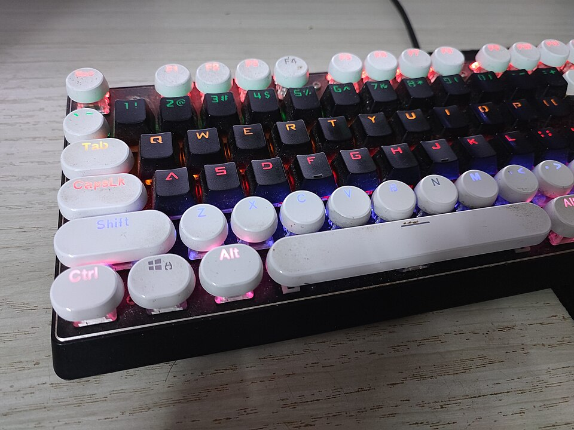

Механічна клавіатура
Підсвічування RGB · 87 клавіш
Зручна компактна клавіатура для роботи, навчання та ігор. Яскраве підсвічування допомагає створити власний стиль.
Флекс-елементи (або флекс-контейнери) - гнучкий варіант розміщення елементів у контейнерах (в інших елементах).
Режим stretch "витягує" елементи, щоб вони заповнювали контейнер. Але це можливо тоді, коли висота дочірніх (внутрішніх) елементів не є фіксованою. Наприклад, 100%
CSS властивість flex задає "еластичність" (або вагу) елементу. Еластичні елементи витягуються, займаючи весь відведений для нього простір. Але елементи з різною вагою займають різну долю загального вільного простору (пропорційно до ваги)
Картка (card) - один з центральних термінів веб-дизайну. Широко вживається для представлення різноманітних сутностей: товарів, фільмів, ігор тощо.

Підсвічування RGB · 87 клавіш
Зручна компактна клавіатура для роботи, навчання та ігор. Яскраве підсвічування допомагає створити власний стиль.